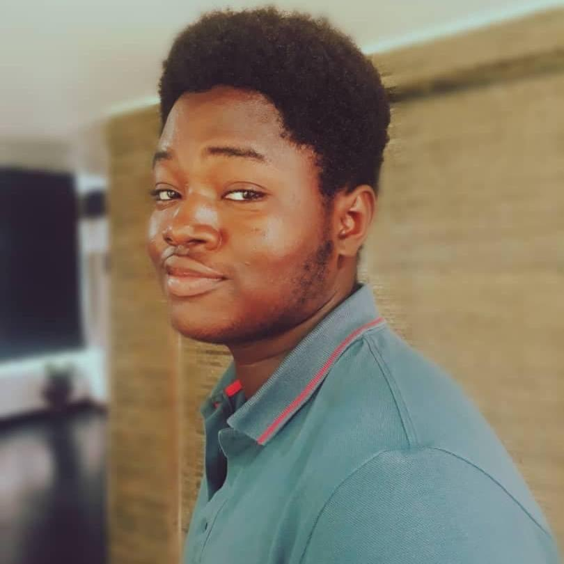

Ehizuelen Odigie / EhizueleNFT

Summary
-
Dedicated and well experienced Discord Community and Project Manager and an outstanding moderator with over 3 years of management and engagement experience, and an added skill in Twitter Space and Discord AMA representation.
-
Improves the community's and project's progress and ensures a level of productive and efficient engagement and livelihood. Disciplined, hardworking and very resourceful with a friendly yet distinguished level of professionalism.
Education
- Bachelor of Science, Estate Management - University of Lagos(2018-Present).
- Science student, Top Highflyers College(2014-2018).
Work Experience.
-
Community Moderator, Social Media Manager and Twitter Space Representative - Neo Masterpiece Films(NFT project).
June 2022 - Present.
- Creating massive awareness and hype for the project.
- Engaging members of the community at all times.
- Growing Social Media handles.
- Getting engagements for social media accounts.
- Promoted to Social Media Manager and Twitter Space Representative for the project.
- Get quality collaborations and invites from important projects in the Space.
- Post tweets and manage engagement on the socials.
- Community Manager, Twitter Space Representative and Game Master - The EscapeVerse.
April 2023 - Present.
- Managing a community of over 400 members and counting.
- Engaging community members.
- Joining and hosting Twitter Spaces to increase exposure and publicity.
- Get collaborations and invites from other projects to set and moderate games between the communities.
- Running and managing the day-to-day activities of the project.
Skills
- Engagement Skill:⭐️⭐️⭐️⭐️⭐️
- Organizational and Management Skill:⭐️⭐️⭐️⭐️
- Games & NFT Enthusiast:⭐️⭐️⭐️⭐️⭐️
Awards and Certification
- Promoted from a Moderator to a Social Media Manager - Neo Masterpiece Films. (February 2023)
Social Media Accounts
Others